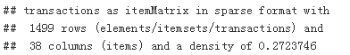
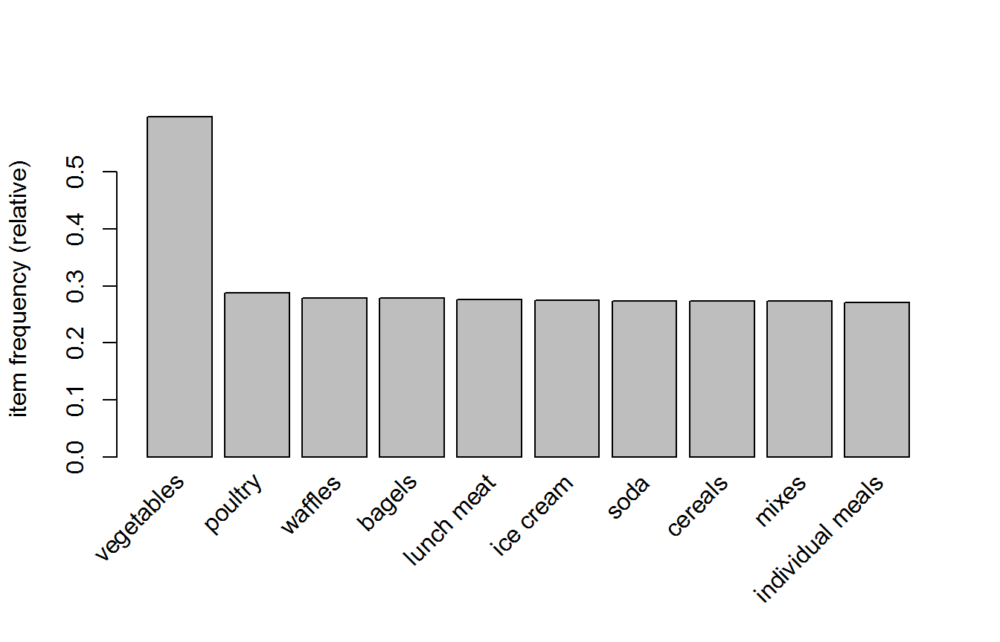
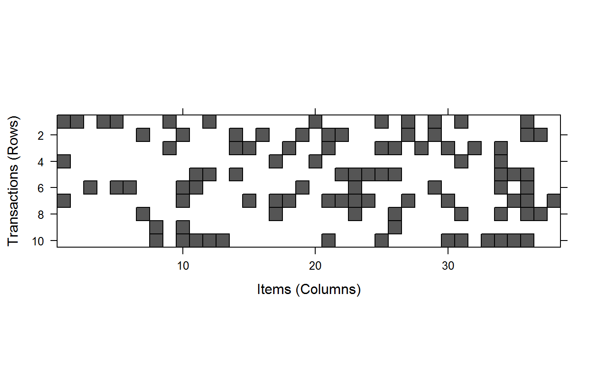

关联规则算法是数据挖掘中的一类重要的算法，1993年，R.Agrawal和R.Srikant等人首先提出关联规则概念，同时给出了相应的挖掘算法AIS，但是性能较差。1994年，他们建立了项目集格空间理论，并依据上述两个定理，提出了著名的Apriori算法，至今Apriori仍然作为关联规则挖掘的经典算法被广泛应用。
Apriori算法之所以性能较高，是因为其实现了一个规则：一个项集如果不是频繁项集，其超项集也一定不是频繁项集，这个规则的限制会帮助算法大大减少对数据的遍历次数。
关联规则是展现项集间关联与相关性的规则。关于这个算法有一个非常有名的故事：“尿布和啤酒”。故事是这样的：美国的妇女们经常会嘱咐她们的丈夫下班后为孩子买尿布，而丈夫在买完尿布后又要顺手买回自己爱喝的啤酒，因此啤酒和尿布在一起被购买的机会很多。这个举措使尿布和啤酒的销量双双增加，并一直为众商家所津津乐道。
给大家展示一个典型的规则表达式：{啤酒，白酒}->{老醋花生}
上面的表达式很好理解，即如果某人购买了啤酒和白酒，那么其很有可能去购买老醋花生。根据这条规则，那么超市就可以把老醋花生放到啤酒和白酒附近的购物架上，促进销量。
上面简单的介绍了一下关联规则，如果彻底理解关联规则则需要明白8个概念。那么下面我就给大家用理论加实际去讲解这8个概念：
首先呢，我们先模拟一个简单的交易数据库，如下表所示:
| 交易号 | 购物清单 |
|---|---|
| 1 | {啤酒，白酒，香烟，老醋花生} |
| 2 | {啤酒，白酒，老醋花生} |
| 3 | {啤酒，白酒，香烟} |
| 4 | {啤酒，香烟} |
| 5 | {啤酒，牙膏} |
| 6 | {白酒，暖壶} |
| 7 | {白酒，纸巾} |
| 8 | {味精，食用盐} |
项集：
关联规则：
支持度：
置信度：
提升度：
由于上面的那个模拟交易数据库不适合讲解下面的三个概念，所以重新模拟一个交易数据库：
| 交易号 | 购物清单 |
|---|---|
| 1 | {啤酒，白酒，香烟，老醋花生} |
| 2 | {啤酒，白酒，香烟} |
| 3 | {啤酒，白酒，香烟} |
| 4 | {啤酒，香烟，老醋花生} |
| 5 | {啤酒，白酒} |
| 6 | {啤酒，香烟} |
频繁项集：
闭频繁项集：
实例：{啤酒，香烟}的超项集有{啤酒，白酒，香烟}、{啤酒，香烟，老醋花生}和{啤酒，白酒，香烟，老醋花生}，它们分别出现了2次、1次和1次，所以X与Y没有相同的支持度，即{啤酒，香烟}是闭频繁项集。
最大频繁项集：
实例：{啤酒，白酒，香烟}出现了3次，属于频繁项集，其超项集{啤酒，白酒，香烟，老醋花生}出现了1次，故不是频繁项集，所以项集{啤酒，白酒，香烟}就是一个最大频繁项集。
到这里也就把这8个概念给大家介绍完了，下面就开始我们的案例实战部分了，同样案例实战也是一个购物篮的关联规则：
本案例的主要内容是利用1000多条的超市的消费数据去探索潜在的关联规则，从而为超市商品的摆放提供一些参考意见。
在R中常用arules和arulesViz两个程序包去实现关联规则，第一个程序包提供了实现Apriori算法的函数，第二个程序包用于可视化关联规则，方便大家生动形象的理解产生的规则。
apriori
apriori(data, parameter = NULL, appearance = NULL, control = NULL)
本次数据读取的方式与之前有所不同，我们使用arules程序包中的read.transaction()函数读取数据，这样就可以成为apriori()函数所需要的数据类型。
read.transactions(file, sep = “”, …)
# install.packages("dplyr")
# install.packages("DT")
# install.packages("arules")
library(dplyr)
library(DT)
library(arules)
groceries <- read.transactions(file = file.choose(), sep = ",") # 读取数据
summary(groceries) # 查看数据集信息## transactions as itemMatrix in sparse format with
## 1499 rows (elements/itemsets/transactions) and
## 38 columns (items) and a density of 0.2723746
##
## most frequent items:
## vegetables poultry waffles bagels lunch meat (Other)
## 895 431 418 417 414 12940
##
## element (itemset/transaction) length distribution:
## sizes
## 3 4 5 6 7 8 9 10 11 12 13 14
## 8 57 51 51 71 74 95 191 304 321 212 64
##
## Min. 1st Qu. Median Mean 3rd Qu. Max.
## 3.00 9.00 11.00 10.35 12.00 14.00
##
## includes extended item information - examples:
## labels
## 1 all- purpose
## 2 aluminum foil
## 3 bagels下面我们首先看返回信息中的第一部分(如下所示)，其提供了我们创建的稀疏矩阵的概要：

返回信息的第二部分(如下所示)，其提供了交易商品中最常购买的商品。最常购买的商品是vegetables，其次是poultry……
返回信息的第三部分(如下所示)，其提供了关于交易规模的统计。比如第一列的(3，8)表示在所有的交易中，有8次交易购买了3类商品；最后一列的(14，64)表示在所有的交易中，有64次交易购买了14类商品。从下面的主要描述性统计量中，我们可以快速的看出大约一半的交易商品数在11类左右。
综上所述，我们通过summary()函数返回的信息可以大体的了解交易数据的情况，但是并不能清洗的看到每一条交易的具体内容。要想查看每条交易的内容也很简单，在arules程序包中提供了inspect()函数，这样就可以快速查看自定义的交易内容：
inspect(groceries[c(4, 9)]) # 查看第4、9次交易的内容## items
## [1] {all- purpose,juice,lunch meat,soda,toilet paper}
## [2] {coffee/tea,dishwashing liquid/detergent,poultry}到这里，我们的简单的数据探索就结束了。那么就有同学提出意见了，说老师说过探索数据的优先顺序不是图、表、文字吗，那么肯定是用图才能生动形象的描述数据啊。那么接下来我们就对数据进行一定的可视化，去帮助大家更加形象的了解数据：
首先呢，我们先去可视化交易数据中大家经常购买的商品，去看看到底那些商品经常出现在大家的购物清单中，这样也可以间接的说明超市的这些商品最好不要缺货。在可视化商品交易频率时，我们使用的是arules程序包中提供的itemFrequencyPlot()函数。
# 绘制支持度最高的前十类商品，并按降序排列
itemFrequencyPlot(groceries, topN = 10)
如果你想可视化交易数据的稀疏矩阵，可以使用arules程序包中提供的image()函数。该函数会返回一个矩阵图，该图中的黑点表明存在交易的记录(即该商品在此交易中被购买了)，空白的位置即没有交易的记录。
image(groceries[1:10, ]) # 可视化交易数据的稀疏矩阵
现在已经把数据整理为了适用于apriori算法的类型，并且也对数据有了简答的了解。接下来我们就开始探寻购物车中商品之间的关联：
rules <- apriori(groceries,
parameter = list(minlen = 2, # 规则的最低频数为2
maxlen = 4, # 规则的最高频数为4
supp = 0.01, # 支持度设置为0.001
conf = 0.5)) # 置信度设置为0.001## Apriori
##
## Parameter specification:
## confidence minval smax arem aval originalSupport maxtime support minlen
## 0.5 0.1 1 none FALSE TRUE 5 0.01 2
## maxlen target ext
## 4 rules FALSE
##
## Algorithmic control:
## filter tree heap memopt load sort verbose
## 0.1 TRUE TRUE FALSE TRUE 2 TRUE
##
## Absolute minimum support count: 14
##
## set item appearances ...[0 item(s)] done [0.00s].
## set transactions ...[38 item(s), 1499 transaction(s)] done [0.00s].
## sorting and recoding items ... [38 item(s)] done [0.00s].
## creating transaction tree ... done [0.00s].
## checking subsets of size 1 2 3 4 done [0.01s].
## writing ... [4910 rule(s)] done [0.00s].
## creating S4 object ... done [0.00s].rules## set of 4910 rules我们根据设置好的参数对数据构建关联规则，最后根据返回的结果得知共建立了4910条规则。下面我们可以根据自己的需求去筛选有用的规则。
一般有三个需求：
我们首先观查一下前3个规则，然后假设我们更关注关联规则的可靠性，那么我们按照提升度对规则进行降序排列：
inspect(rules[1:3]) # 观察前三个规则## lhs rhs support confidence lift
## [1] {hand soap} => {vegetables} 0.1407605 0.5926966 0.9926841
## [2] {tortillas} => {vegetables} 0.1460974 0.5983607 1.0021705
## [3] {shampoo} => {vegetables} 0.1454303 0.5860215 0.9815042rules2 <- sort(rules, by = "lift", decreasing = T) # 按照提升度对规则进行降序排列
inspect(rules2[1:5]) # 观察前五个规则## lhs rhs support
## [1] {hand soap,individual meals,waffles} => {cheeses} 0.01000667
## [2] {aluminum foil,milk,sandwich loaves} => {tortillas} 0.01000667
## [3] {ice cream,paper towels,soda} => {aluminum foil} 0.01000667
## [4] {paper towels,shampoo,soap} => {sandwich loaves} 0.01000667
## [5] {bagels,beef,pasta} => {milk} 0.01000667
## confidence lift
## [1] 0.6250000 2.402244
## [2] 0.5555556 2.275349
## [3] 0.6000000 2.271212
## [4] 0.5555556 2.232648
## [5] 0.6000000 2.215271返回结果的lhs和rhs所对应的列分别是规则的前项(触发规则需要的条件)和后项(满足触发条件的预期结果)。
比如规则的第五条，用通俗的语言来讲就是：“如果某顾客购买了百吉饼、牛肉和意大利面，那么他还可能购买牛奶。”
上述规则看起来还是挺和谐的，但是咱们再看看第一条规则：“如果某顾客购买了香皂、单人餐和华夫饼，那么他还可能购买奶酪。”这样的规则看起来就令人费解了，这样的规则貌似没有一个合理的逻辑去解释，但是数据又为规则提供了一定的依据。为了解决这个问题，我们一般会把产生的规则分为3类：
关联规则是解决大数据问题的一种无监督学习的算法，它可以从任何关于模式的先验知识的大型数据库中提取知识。每中不足的是，将大量的信息缩减成更小、更容易于管理的结果集需要一些努力。本节研究的Apriori算法可以通过设置兴趣度的最小阈值和只呈现满足这些准则的关联来解决这个问题。
还有一点就是现实中的数据是庞大的，很容易产生上亿的规则，这个规则的评估和检验依旧是一个很难解决的问题。
[1] BrettLantz. 机器学习与R语言[M]. 机械工业出版社, 2015.
[2] 关联规则挖掘算法之Apriori算法.https://www.cnblogs.com/nxld/p/6380417.html. 2017.
[3] 基于R语言的关联规则实现.https://mp.weixin.qq.com/s?__biz=MzIxNjA2ODUzNg==&mid=400031158&idx=1&sn=2653f5711ab71d4a89be4287e60ba32e&mpshare=1&scene=23&srcid=0618mZy2UVsGWjtV0vkqpYE5#rd.2015